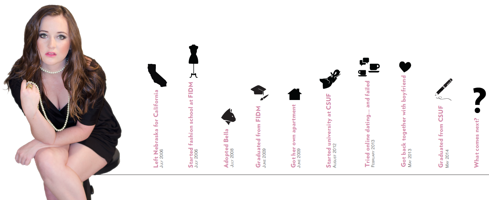
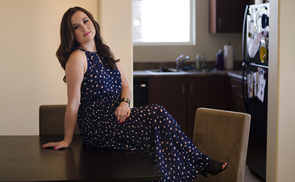

These words, from some song in an old Kate Hudson romantic comedy had been twisting through my head for weeks.
I was having fun in my ‘20s in a glittering new city, while everyone else I grew up with was picking corn and getting pinned down by mortgages and babies. I had moved to Los Angeles from Nebraska when I was 18 and never looked back.So I went out. I mastered the art of shooting vodka, learned not to drink rum, and became a fine wine connoisseur — one bottle at a time.
I dated a lot of guys. I kept a lot of the wrong ones around, and probably sent some of the right ones packing. I searched for myself in night clubs, penthouse apartments, and sometimes in beds that weren’t my own.
After all the mistakes I made, I felt like I was finally figuring myself out. I wanted to spend a semester in Paris. I wanted to move to New York and work at Seventeen magazine. I pictured myself as an independent, power girl. The type of girl that women trapped with five kids and a minivan would envy. I pictured myself running around New York City like Carrie Bradshaw on "Sex and the City." This fantasy was shaping itself into a solid possibility, I couldn’t wait for this glamorous part of my life to begin.
It was late on New Year’s Eve, three months away from my birthday. I was caking two pounds of foundation on my face and slapping on enough eyeliner and mascara to last for days. I was thinking about the upcoming year, praying it would be better than the last when it hit me, “Holy shit! I’m going to be 25 this year!”
It was like I had bellyflopped into a pool of bricks. How the hell did this happen? I mean, it’s not like I hadn’t been doing anything with my life. I had graduated from fashion school when I was 20 and worked retail to pay rent on my own rundown, overpriced apartment since. I attended community college, biding my time until I could afford to attend a university to get my degree in journalism.
I was almost a quarter of a century old. I was single, with a cat. The only money in my bank account was from student loans and sympathy Christmas cash my family knew I still needed.
Somehow time escaped me, 25-year-olds are supposed to be adults. They’re supposed to have serious careers, a serious relationship and, where I come from, kids!In moments, my worries of what to wear and who I would kiss at midnight turned to worries about fertility. Oh God, my fertility!
My mom had trouble getting pregnant when she was in her ‘30s. As a result, I have an older adopted sister, and by some mathematical improbability my brother and I were born. It is something that lingered in the back of my mind when I thought about having kids someday. That night, that moment, the road I was on ended and I had no choice but to pick which way to go. There was nothing in between. The fork I had been avoiding since I was 19 appeared in front me and I could no longer ignore it. I was frustrated it had to come to that point. If it had not been for a random guy, on some random summer night, who said something so insane, I would have never been standing there.
Yes, it took five little words to open my eyes to a possibility I never considered. Let’s be clear, I would never be crazy enough to consider myself too pretty to work. I’m fairly average. The thought of anyone not having to work because of their hotness is insane. Even Victoria’s Secret Angels have jobs.
I never saw that guy again, but the words didn’t affect me any less. If I didn’t work, I’d be like a stay at home mom, right? ‘Is that an acceptable life choice?’ I wondered.
Growing up with working parents who shared financial responsibility, the thought of becoming “just a stay at home mom” wasn’t even an option. It didn’t even cross my mind I could be one. Who would want to be just a stay at home mom, anyway? And when did the “just” part get added in?
Modern day parents would have to excuse themselves to take a Xanax and cry into a pillow if their little girl announced her dream was to become just a wife and mom. No parent wants to hear that their daughter is throwing away her education and career goals to pop out a few kids and cook for her husband.
“You’re too pretty to work.”
Those five words changed me. Suddenly I pictured my life differently. I started picturing myself as a modern day homemaker, decked in a Kate Spade fit and flare. I pictured myself placing flowered headbands into my future daughter’s hair and taking her to the park. I picture myself baking “homemade” cookies with the help of a Betty Crocker just-add-eggs-and-water box. Mostly, I pictured myself being happy and fulfilled with that life.
I was no stranger to a women’s studies class. My bra-burning teacher once stood in front of the class and argued with anyone who disagreed homemakers were anything but abused puppies kicked one too many times. I had heard the jokes that “so and so” is going to college to earn her “M.R.S.” degree. I’d been told the lack of purpose housewives have, destroys their confidence. Housewives are shown on TV and in movies with a lack of depth, and more modernly as unintelligent trophy wives. I’m not stupid. I understand a homemaker’s life is not always glamorous. And I can see that not having career goals outside the family could make me feel inferior to a career-driven husband, if I let it.
People from my hometown always said this to me. I’m from Lincoln, Nebraska. It’s not a small town, but it has small town values. Jesus, corn and family are the three most important things, and the fact that the football stadium becomes the third largest city on Cornhusker game days is something the state prides itself on.
The kids I went to high school with are married, own houses and have several kids. Knowing this would be my only possible future, I booked it out of Dodge as soon as I graduated high school. It was a bigger risk to stay and be miserable, than to pick up and leave alone. Friends had grown to know me as a driven and career-oriented person. I loved going out and being single. I shuddered when marriage and kids were brought up on first dates. I cursed and yelled, “Are you effing kidding me?!” every time someone else became engaged. I cringed when Facebook friends posted pictures of their pregnant bellies.
‘Can they seriously think that baby is cute?’
Still, at times I had a mother’s instinct that was hard to ignore. When I was 20 I adopted a kitten named Bella from an animal shelter. I loved her so much I couldn’t leave her. I dropped a class at school just so I could stay home more and be with her. I worried about her constantly when I wasn’t home. If I couldn’t leave my cat at home, I doubt I could leave a child. How could I justify staying at home? How could I throw away everything I had been working for and am still working for? To cook, clean and look after a family?
In the weeks that followed New Year’s, I realized that somehow, after all my schooling, after years of climbing my way up to my career goals, after all the student debt, the internships, I felt like I had already done what I had set out to do. I came to California and accomplished everything I had wanted, what came next? After my revelation I canceled my semester in Paris, joined Match.com. Now I had to explain my decision to my friends.
“So what’s your dream job when you graduate?” My friend, who has had her career goals for her entire life mapped out, asked.
“Honestly, I want to get married and have kids.”
“So where are you going to work?”
“I just want to stay home and raise my family.”
She looked at me like she had just found out Mary Jane Manolos never existed.
“But you can do both.”
Doesn't everyone say this?
This “you can have it all” baby boomer mentality is to blame for the sleepless nights and panic attacks of moms everywhere. It’s to blame for the guilt moms feel when they send store-bought cookies to their kid’s bake sale. It’s to blame when moms take on extra work that should be fulfilling, but instead end up feeling guilty for not feeling guilty.
Yes, I could have it all, but why on Earth would I want to? I don’t want to do anything halfway. I don’t want to put 50 percent of myself into my family and 50 percent into my career. I don’t want to be stretched thin. I would much rather look back at my life someday and think about how I was a good wife and mom — not just a successful career woman. Some women can do it all, and maybe I could do it all too.
I just don’t want to.
It may be uncharacteristically old-fashioned, but this is what I want. A few months after I turned 25, and after several horribly tragic tries at online dating, I got back together with my boyfriend I had met when I was 19. Currently, we plan on getting married, and talk about financial challenges we need to prepare for when I stay at home with our kids.
I understand the risk of not pursuing a glamorous career when I graduate. I understand I may end up single someday with giant gaps in my résumé. I even understand the horrified looks I will get when I say I want to stay at home and take care of my family. But as I stood at the fork in the road that had abruptly appeared on New Years Eve, deep down